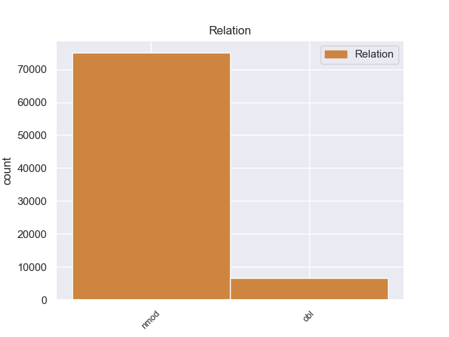
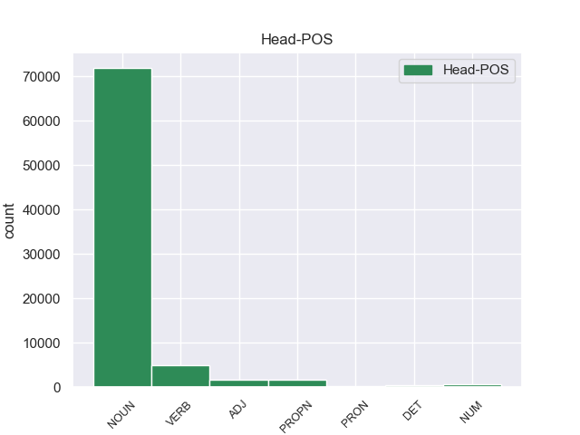
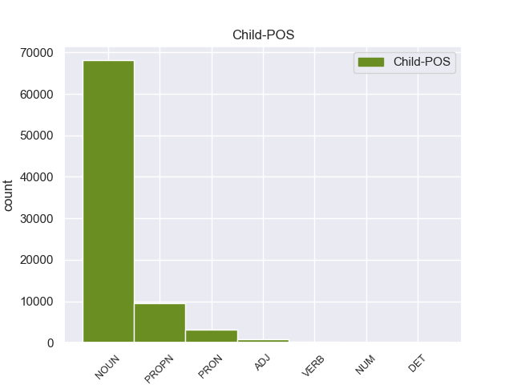

Distribution of features within this leaf



Agreement Rules sorted by frequency.
- When the dependent token is the nominal modifier(nmod) of the head token, and the head token is NOUN
1 - _ _ _ _ 0 _ _ _
2 Здравствуй _ _ _ _ 0 _ _ _
3 , _ _ _ _ 0 _ _ _
4 - _ _ _ _ 0 _ _ _
5 сказал _ _ _ _ 0 _ _ _
6 он _ _ _ _ 0 _ _ _
7 , _ _ _ _ 0 _ _ _
8 обернувшись _ _ _ _ 0 _ _ _
9 и _ _ _ _ 0 _ _ _
10 доброжелательно _ _ _ _ 0 _ _ _
11 глядя _ _ _ _ 0 _ _ _
12 на _ _ _ _ 0 _ _ _
13 меня _ _ _ _ 0 _ _ _
14 большими _ _ _ _ 0 _ _ _
15 коричневыми _ _ _ _ 0 _ _ _
16 глазами _ _ _ _ 0 _ _ _
17 из-за _ _ _ _ 0 _ _ _
18 круглых _ _ _ _ 0 _ _ _
19 плоских _ _ _ _ 0 _ _ _
20 стекол стекло NOUN _ Animacy=Inan|Case=Gen|Gender=Neut|Number=Plur 0 _ _ _
21 оконной _ _ _ _ 0 _ _ _
22 прозрачности прозрачность NOUN _ Animacy=Inan|Case=Gen|Gender=Fem|Number=Sing 20 nmod 20:nmod SpaceAfter=No
23 . _ _ _ _ 0 _ _ _
1 В _ _ _ _ 0 _ _ _
2 Иркутске Иркутск PROPN _ Animacy=Inan|Case=Loc|Gender=Masc|Number=Sing 0 _ _ _
3 в _ _ _ _ 0 _ _ _
4 небывалой _ _ _ _ 0 _ _ _
5 близости близость NOUN _ Animacy=Inan|Case=Loc|Gender=Fem|Number=Sing 2 nmod 2:nmod _
6 к _ _ _ _ 0 _ _ _
7 рекам _ _ _ _ 0 _ _ _
8 , _ _ _ _ 0 _ _ _
9 горам _ _ _ _ 0 _ _ _
10 , _ _ _ _ 0 _ _ _
11 недрам _ _ _ _ 0 _ _ _
12 , _ _ _ _ 0 _ _ _
13 деревьям _ _ _ _ 0 _ _ _
14 , _ _ _ _ 0 _ _ _
15 цветам _ _ _ _ 0 _ _ _
16 насыщался _ _ _ _ 0 _ _ _
17 я _ _ _ _ 0 _ _ _
18 , _ _ _ _ 0 _ _ _
19 словно _ _ _ _ 0 _ _ _
20 под _ _ _ _ 0 _ _ _
21 мощным _ _ _ _ 0 _ _ _
22 давлением _ _ _ _ 0 _ _ _
23 , _ _ _ _ 0 _ _ _
24 чувством _ _ _ _ 0 _ _ _
25 родины _ _ _ _ 0 _ _ _
26 … _ _ _ _ 0 _ _ _
1 Затем _ _ _ _ 0 _ _ _
2 я _ _ _ _ 0 _ _ _
3 потащил _ _ _ _ 0 _ _ _
4 какое-то _ _ _ _ 0 _ _ _
5 длинное _ _ _ _ 0 _ _ _
6 растение _ _ _ _ 0 _ _ _
7 с _ _ _ _ 0 _ _ _
8 сухими _ _ _ _ 0 _ _ _
9 темными _ _ _ _ 0 _ _ _
10 коробочками _ _ _ _ 0 _ _ _
11 семенников _ _ _ _ 0 _ _ _
12 , _ _ _ _ 0 _ _ _
13 будто _ _ _ _ 0 _ _ _
14 наполненными наполнить VERB _ Aspect=Perf|Case=Ins|Number=Plur|Tense=Past|VerbForm=Part|Voice=Pass 0 _ _ _
15 ватой вата NOUN _ Animacy=Inan|Case=Ins|Gender=Fem|Number=Sing 14 obl 14:obl SpaceAfter=No
16 . _ _ _ _ 0 _ _ _
1 Он _ _ _ _ 0 _ _ _
2 звучно _ _ _ _ 0 _ _ _
3 шлепал _ _ _ _ 0 _ _ _
4 перед _ _ _ _ 0 _ _ _
5 покупателем _ _ _ _ 0 _ _ _
6 на _ _ _ _ 0 _ _ _
7 прилавок _ _ _ _ 0 _ _ _
8 мясную _ _ _ _ 0 _ _ _
9 часть _ _ _ _ 0 _ _ _
10 , _ _ _ _ 0 _ _ _
11 затем _ _ _ _ 0 _ _ _
12 швырял _ _ _ _ 0 _ _ _
13 ее _ _ _ _ 0 _ _ _
14 на _ _ _ _ 0 _ _ _
15 иссеченную _ _ _ _ 0 _ _ _
16 , _ _ _ _ 0 _ _ _
17 похожую похожий ADJ _ Case=Acc|Degree=Pos|Gender=Fem|Number=Sing 0 _ _ _
18 на _ _ _ _ 0 _ _ _
19 плаху плаха NOUN _ Animacy=Inan|Case=Acc|Gender=Fem|Number=Sing 17 obl 17:obl SpaceAfter=No
20 , _ _ _ _ 0 _ _ _
21 толстую _ _ _ _ 0 _ _ _
22 колоду _ _ _ _ 0 _ _ _
23 , _ _ _ _ 0 _ _ _
24 хряскал _ _ _ _ 0 _ _ _
25 топором _ _ _ _ 0 _ _ _
26 по _ _ _ _ 0 _ _ _
27 хрящам _ _ _ _ 0 _ _ _
28 и _ _ _ _ 0 _ _ _
29 косточкам _ _ _ _ 0 _ _ _
30 , _ _ _ _ 0 _ _ _
31 с _ _ _ _ 0 _ _ _
32 небрежным _ _ _ _ 0 _ _ _
33 видом _ _ _ _ 0 _ _ _
34 бросал _ _ _ _ 0 _ _ _
35 отрубок _ _ _ _ 0 _ _ _
36 на _ _ _ _ 0 _ _ _
37 весы _ _ _ _ 0 _ _ _
38 и _ _ _ _ 0 _ _ _
39 , _ _ _ _ 0 _ _ _
40 не _ _ _ _ 0 _ _ _
41 давая _ _ _ _ 0 _ _ _
42 успокоиться _ _ _ _ 0 _ _ _
43 медным _ _ _ _ 0 _ _ _
44 чашкам _ _ _ _ 0 _ _ _
45 , _ _ _ _ 0 _ _ _
46 так _ _ _ _ 0 _ _ _
47 был _ _ _ _ 0 _ _ _
48 он _ _ _ _ 0 _ _ _
49 уверен _ _ _ _ 0 _ _ _
50 в _ _ _ _ 0 _ _ _
51 своем _ _ _ _ 0 _ _ _
52 глазе _ _ _ _ 0 _ _ _
53 , _ _ _ _ 0 _ _ _
54 быстро _ _ _ _ 0 _ _ _
55 заворачивал _ _ _ _ 0 _ _ _
56 покупку _ _ _ _ 0 _ _ _
57 в _ _ _ _ 0 _ _ _
58 газету _ _ _ _ 0 _ _ _
59 . _ _ _ _ 0 _ _ _
1 Тем _ _ _ _ 0 _ _ _
2 самым _ _ _ _ 0 _ _ _
3 пресса _ _ _ _ 0 _ _ _
4 стала _ _ _ _ 0 _ _ _
5 бы _ _ _ _ 0 _ _ _
6 вооруженней _ _ _ _ 0 _ _ _
7 при _ _ _ _ 0 _ _ _
8 выполнении _ _ _ _ 0 _ _ _
9 одной один NUM _ Case=Gen|Gender=Fem 0 _ _ _
10 из _ _ _ _ 0 _ _ _
11 своих _ _ _ _ 0 _ _ _
12 важнейших _ _ _ _ 0 _ _ _
13 функций функция NOUN _ Animacy=Inan|Case=Gen|Gender=Fem|Number=Plur 9 nmod 9:nmod _
14 - _ _ _ _ 0 _ _ _
15 защите _ _ _ _ 0 _ _ _
16 Конституции _ _ _ _ 0 _ _ _
17 СССР _ _ _ _ 0 _ _ _
18 . _ _ _ _ 0 _ _ _
1 Хищник _ _ _ _ 0 _ _ _
2 , _ _ _ _ 0 _ _ _
3 настигший _ _ _ _ 0 _ _ _
4 зеленую _ _ _ _ 0 _ _ _
5 птицу _ _ _ _ 0 _ _ _
6 с _ _ _ _ 0 _ _ _
7 красной _ _ _ _ 0 _ _ _
8 головой _ _ _ _ 0 _ _ _
9 , _ _ _ _ 0 _ _ _
10 не _ _ _ _ 0 _ _ _
11 оставил _ _ _ _ 0 _ _ _
12 от _ _ _ _ 0 _ _ _
13 нее _ _ _ _ 0 _ _ _
14 ни _ _ _ _ 0 _ _ _
15 косточки _ _ _ _ 0 _ _ _
16 , _ _ _ _ 0 _ _ _
17 ни _ _ _ _ 0 _ _ _
18 лоскутка _ _ _ _ 0 _ _ _
19 плоти _ _ _ _ 0 _ _ _
20 , _ _ _ _ 0 _ _ _
21 лишь _ _ _ _ 0 _ _ _
22 весь _ _ _ _ 0 _ _ _
23 ее _ _ _ _ 0 _ _ _
24 непригодный непригодный ADJ _ Animacy=Inan|Case=Acc|Degree=Pos|Gender=Masc|Number=Sing 0 _ _ _
25 в _ _ _ _ 0 _ _ _
26 пищу пища NOUN _ Animacy=Inan|Case=Acc|Gender=Fem|Number=Sing 24 nmod 24:nmod _
27 наряд _ _ _ _ 0 _ _ _
28 содрал _ _ _ _ 0 _ _ _
29 он _ _ _ _ 0 _ _ _
30 с _ _ _ _ 0 _ _ _
31 нее _ _ _ _ 0 _ _ _
32 и _ _ _ _ 0 _ _ _
33 сложил _ _ _ _ 0 _ _ _
34 возле _ _ _ _ 0 _ _ _
35 пня _ _ _ _ 0 _ _ _
36 , _ _ _ _ 0 _ _ _
37 а _ _ _ _ 0 _ _ _
38 быть _ _ _ _ 0 _ _ _
39 может _ _ _ _ 0 _ _ _
40 , _ _ _ _ 0 _ _ _
41 это _ _ _ _ 0 _ _ _
42 ветром _ _ _ _ 0 _ _ _
43 смело _ _ _ _ 0 _ _ _
44 к _ _ _ _ 0 _ _ _
45 пню _ _ _ _ 0 _ _ _
46 набросанные _ _ _ _ 0 _ _ _
47 на _ _ _ _ 0 _ _ _
48 лиственную _ _ _ _ 0 _ _ _
49 прель _ _ _ _ 0 _ _ _
50 перья _ _ _ _ 0 _ _ _
51 … _ _ _ _ 0 _ _ _
1 В _ _ _ _ 0 _ _ _
2 конце _ _ _ _ 0 _ _ _
3 XX _ _ _ _ 0 _ _ _
4 века _ _ _ _ 0 _ _ _
5 не _ _ _ _ 0 _ _ _
6 существует _ _ _ _ 0 _ _ _
7 иного _ _ _ _ 0 _ _ _
8 способа _ _ _ _ 0 _ _ _
9 сохранения _ _ _ _ 0 _ _ _
10 плодов _ _ _ _ 0 _ _ _
11 цивилизации _ _ _ _ 0 _ _ _
12 и _ _ _ _ 0 _ _ _
13 приобретения приобретение NOUN _ Animacy=Inan|Case=Gen|Gender=Neut|Number=Sing 0 _ _ _
14 новых новый ADJ _ Case=Gen|Degree=Pos|Number=Plur 13 obl 13:obl SpaceAfter=No
15 , _ _ _ _ 0 _ _ _
16 кроме _ _ _ _ 0 _ _ _
17 сотрудничества _ _ _ _ 0 _ _ _
18 всех _ _ _ _ 0 _ _ _
19 стран _ _ _ _ 0 _ _ _
20 , _ _ _ _ 0 _ _ _
21 включая _ _ _ _ 0 _ _ _
22 относящиеся _ _ _ _ 0 _ _ _
23 к _ _ _ _ 0 _ _ _
24 противоположным _ _ _ _ 0 _ _ _
25 социальным _ _ _ _ 0 _ _ _
26 системам _ _ _ _ 0 _ _ _
27 , _ _ _ _ 0 _ _ _
28 - _ _ _ _ 0 _ _ _
29 во _ _ _ _ 0 _ _ _
30 имя _ _ _ _ 0 _ _ _
31 сохранения _ _ _ _ 0 _ _ _
32 мира _ _ _ _ 0 _ _ _
33 и _ _ _ _ 0 _ _ _
34 разрешения _ _ _ _ 0 _ _ _
35 в _ _ _ _ 0 _ _ _
36 интересах _ _ _ _ 0 _ _ _
37 человечества _ _ _ _ 0 _ _ _
38 глобальных _ _ _ _ 0 _ _ _
39 проблем _ _ _ _ 0 _ _ _
40 . _ _ _ _ 0 _ _ _
1 Были _ _ _ _ 0 _ _ _
2 цветы _ _ _ _ 0 _ _ _
3 , _ _ _ _ 0 _ _ _
4 похожие _ _ _ _ 0 _ _ _
5 на _ _ _ _ 0 _ _ _
6 садовые _ _ _ _ 0 _ _ _
7 бессмертники _ _ _ _ 0 _ _ _
8 , _ _ _ _ 0 _ _ _
9 но _ _ _ _ 0 _ _ _
10 не _ _ _ _ 0 _ _ _
11 сухие _ _ _ _ 0 _ _ _
12 , _ _ _ _ 0 _ _ _
13 а _ _ _ _ 0 _ _ _
14 трепетно _ _ _ _ 0 _ _ _
15 - _ _ _ _ 0 _ _ _
16 мягкие _ _ _ _ 0 _ _ _
17 , _ _ _ _ 0 _ _ _
18 полные _ _ _ _ 0 _ _ _
19 в _ _ _ _ 0 _ _ _
20 каждом _ _ _ _ 0 _ _ _
21 лепестке _ _ _ _ 0 _ _ _
22 нежной _ _ _ _ 0 _ _ _
23 , _ _ _ _ 0 _ _ _
24 непрочной _ _ _ _ 0 _ _ _
25 жизни _ _ _ _ 0 _ _ _
26 , _ _ _ _ 0 _ _ _
27 с _ _ _ _ 0 _ _ _
28 оранжевым _ _ _ _ 0 _ _ _
29 венчиком _ _ _ _ 0 _ _ _
30 и _ _ _ _ 0 _ _ _
31 синей _ _ _ _ 0 _ _ _
32 короной _ _ _ _ 0 _ _ _
33 ; _ _ _ _ 0 _ _ _
34 были _ _ _ _ 0 _ _ _
35 , _ _ _ _ 0 _ _ _
36 как _ _ _ _ 0 _ _ _
37 садовые _ _ _ _ 0 _ _ _
38 лилии _ _ _ _ 0 _ _ _
39 , _ _ _ _ 0 _ _ _
40 целые _ _ _ _ 0 _ _ _
41 лужайки _ _ _ _ 0 _ _ _
42 палевых _ _ _ _ 0 _ _ _
43 , _ _ _ _ 0 _ _ _
44 навощенных _ _ _ _ 0 _ _ _
45 , _ _ _ _ 0 _ _ _
46 лилий _ _ _ _ 0 _ _ _
47 на _ _ _ _ 0 _ _ _
48 длинных _ _ _ _ 0 _ _ _
49 , _ _ _ _ 0 _ _ _
50 стройных _ _ _ _ 0 _ _ _
51 стеблях _ _ _ _ 0 _ _ _
52 с _ _ _ _ 0 _ _ _
53 саблеобразными _ _ _ _ 0 _ _ _
54 листьями _ _ _ _ 0 _ _ _
55 ; _ _ _ _ 0 _ _ _
56 были _ _ _ _ 0 _ _ _
57 , _ _ _ _ 0 _ _ _
58 как _ _ _ _ 0 _ _ _
59 махровая _ _ _ _ 0 _ _ _
60 гвоздика _ _ _ _ 0 _ _ _
61 , _ _ _ _ 0 _ _ _
62 но _ _ _ _ 0 _ _ _
63 пышнее _ _ _ _ 0 _ _ _
64 и _ _ _ _ 0 _ _ _
65 всех _ _ _ _ 0 _ _ _
66 расцветок _ _ _ _ 0 _ _ _
67 , _ _ _ _ 0 _ _ _
68 от _ _ _ _ 0 _ _ _
69 фиолетового _ _ _ _ 0 _ _ _
70 до _ _ _ _ 0 _ _ _
71 бордового _ _ _ _ 0 _ _ _
72 ; _ _ _ _ 0 _ _ _
73 были _ _ _ _ 0 _ _ _
74 и _ _ _ _ 0 _ _ _
75 такие такой DET _ Case=Nom|Number=Plur 0 _ _ _
76 , _ _ _ _ 0 _ _ _
77 что _ _ _ _ 0 _ _ _
78 не _ _ _ _ 0 _ _ _
79 сравнишь _ _ _ _ 0 _ _ _
80 и _ _ _ _ 0 _ _ _
81 не _ _ _ _ 0 _ _ _
82 опишешь _ _ _ _ 0 _ _ _
83 , _ _ _ _ 0 _ _ _
84 словно _ _ _ _ 0 _ _ _
85 фантастические _ _ _ _ 0 _ _ _
86 гибриды гибрид NOUN _ Animacy=Inan|Case=Nom|Gender=Masc|Number=Plur 75 obl 75:obl _
87 василька _ _ _ _ 0 _ _ _
88 с _ _ _ _ 0 _ _ _
89 георгином _ _ _ _ 0 _ _ _
90 , _ _ _ _ 0 _ _ _
91 ромашки _ _ _ _ 0 _ _ _
92 с _ _ _ _ 0 _ _ _
93 настурцией _ _ _ _ 0 _ _ _
94 , _ _ _ _ 0 _ _ _
95 причудливые _ _ _ _ 0 _ _ _
96 , _ _ _ _ 0 _ _ _
97 сказочные _ _ _ _ 0 _ _ _
98 цветы _ _ _ _ 0 _ _ _
99 с _ _ _ _ 0 _ _ _
100 длиннющими _ _ _ _ 0 _ _ _
101 пестиками _ _ _ _ 0 _ _ _
102 , _ _ _ _ 0 _ _ _
103 торчащими _ _ _ _ 0 _ _ _
104 , _ _ _ _ 0 _ _ _
105 будто _ _ _ _ 0 _ _ _
106 щупальца _ _ _ _ 0 _ _ _
107 , _ _ _ _ 0 _ _ _
108 из _ _ _ _ 0 _ _ _
109 глубокой _ _ _ _ 0 _ _ _
110 , _ _ _ _ 0 _ _ _
111 слоистой _ _ _ _ 0 _ _ _
112 чашки _ _ _ _ 0 _ _ _
113 . _ _ _ _ 0 _ _ _
1 Вот _ _ _ _ 0 _ _ _
2 почему _ _ _ _ 0 _ _ _
3 , _ _ _ _ 0 _ _ _
4 если _ _ _ _ 0 _ _ _
5 в _ _ _ _ 0 _ _ _
6 сернокислом _ _ _ _ 0 _ _ _
7 растворе _ _ _ _ 0 _ _ _
8 содержится _ _ _ _ 0 _ _ _
9 много _ _ _ _ 0 _ _ _
10 разных _ _ _ _ 0 _ _ _
11 ионов _ _ _ _ 0 _ _ _
12 , _ _ _ _ 0 _ _ _
13 скажем _ _ _ _ 0 _ _ _
14 молибдена _ _ _ _ 0 _ _ _
15 , _ _ _ _ 0 _ _ _
16 никеля _ _ _ _ 0 _ _ _
17 , _ _ _ _ 0 _ _ _
18 меди _ _ _ _ 0 _ _ _
19 , _ _ _ _ 0 _ _ _
20 калия _ _ _ _ 0 _ _ _
21 , _ _ _ _ 0 _ _ _
22 рения _ _ _ _ 0 _ _ _
23 , _ _ _ _ 0 _ _ _
24 а _ _ _ _ 0 _ _ _
25 извлечь _ _ _ _ 0 _ _ _
26 нужно _ _ _ _ 0 _ _ _
27 рений _ _ _ _ 0 _ _ _
28 , _ _ _ _ 0 _ _ _
29 которого который PRON _ Case=Gen 0 _ _ _
30 меньше _ _ _ _ 0 _ _ _
31 всего все PRON _ Animacy=Inan|Case=Gen|Gender=Neut|Number=Sing 29 nmod 29:nmod SpaceAfter=No
32 , _ _ _ _ 0 _ _ _
33 то _ _ _ _ 0 _ _ _
34 эффективно _ _ _ _ 0 _ _ _
35 справиться _ _ _ _ 0 _ _ _
36 с _ _ _ _ 0 _ _ _
37 этим _ _ _ _ 0 _ _ _
38 могут _ _ _ _ 0 _ _ _
39 жидкие _ _ _ _ 0 _ _ _
40 мембраны _ _ _ _ 0 _ _ _
41 , _ _ _ _ 0 _ _ _
42 которые _ _ _ _ 0 _ _ _
43 легко _ _ _ _ 0 _ _ _
44 создавать _ _ _ _ 0 _ _ _
45 , _ _ _ _ 0 _ _ _
46 вводя _ _ _ _ 0 _ _ _
47 различные _ _ _ _ 0 _ _ _
48 избирательные _ _ _ _ 0 _ _ _
49 реагенты _ _ _ _ 0 _ _ _
50 . _ _ _ _ 0 _ _ _
1 Важный _ _ _ _ 0 _ _ _
2 для _ _ _ _ 0 _ _ _
3 каждого каждый DET _ Case=Gen|Gender=Masc|Number=Sing 0 _ _ _
4 из _ _ _ _ 0 _ _ _
5 нас мы PRON _ Case=Gen|Number=Plur|Person=1 3 nmod 3:nmod _
6 и _ _ _ _ 0 _ _ _
7 для _ _ _ _ 0 _ _ _
8 всего _ _ _ _ 0 _ _ _
9 общества _ _ _ _ 0 _ _ _
10 . _ _ _ _ 0 _ _ _
1 И _ _ _ _ 0 _ _ _
2 поскольку _ _ _ _ 0 _ _ _
3 ассоциация _ _ _ _ 0 _ _ _
4 " _ _ _ _ 0 _ _ _
5 ГОЛОС _ _ _ _ 0 _ _ _
6 " _ _ _ _ 0 _ _ _
7 выбрана _ _ _ _ 0 _ _ _
8 как _ _ _ _ 0 _ _ _
9 первая _ _ _ _ 0 _ _ _
10 жертва _ _ _ _ 0 _ _ _
11 , _ _ _ _ 0 _ _ _
12 всё _ _ _ _ 0 _ _ _
13 будет _ _ _ _ 0 _ _ _
14 по _ _ _ _ 0 _ _ _
15 максимуму _ _ _ _ 0 _ _ _
16 , _ _ _ _ 0 _ _ _
17 будут _ _ _ _ 0 _ _ _
18 использоваться _ _ _ _ 0 _ _ _
19 все _ _ _ _ 0 _ _ _
20 репрессивные _ _ _ _ 0 _ _ _
21 методы _ _ _ _ 0 _ _ _
22 для _ _ _ _ 0 _ _ _
23 запугивания _ _ _ _ 0 _ _ _
24 всех все PRON _ Animacy=Anim|Case=Gen|Number=Plur 0 _ _ _
25 остальных остальной ADJ _ Case=Gen|Degree=Pos|Number=Plur 24 obl 24:obl SpaceAfter=No
26 . _ _ _ _ 0 _ _ _
1 Да _ _ _ _ 0 _ _ _
2 , _ _ _ _ 0 _ _ _
3 действительно _ _ _ _ 0 _ _ _
4 , _ _ _ _ 0 _ _ _
5 сегодня _ _ _ _ 0 _ _ _
6 нас _ _ _ _ 0 _ _ _
7 больше _ _ _ _ 0 _ _ _
8 всего _ _ _ _ 0 _ _ _
9 интересует _ _ _ _ 0 _ _ _
10 период _ _ _ _ 0 _ _ _
11 отечественной _ _ _ _ 0 _ _ _
12 истории _ _ _ _ 0 _ _ _
13 , _ _ _ _ 0 _ _ _
14 начиная _ _ _ _ 0 _ _ _
15 с _ _ _ _ 0 _ _ _
16 Октября Октябрь PROPN _ Animacy=Inan|Case=Gen|Gender=Masc|Number=Sing 0 _ _ _
17 1917-го 1917-й ADJ _ Case=Gen|Degree=Pos|Gender=Masc|Number=Sing 16 obl 16:obl SpaceAfter=No
18 . _ _ _ _ 0 _ _ _
1 В _ _ _ _ 0 _ _ _
2 соответствии _ _ _ _ 0 _ _ _
3 с _ _ _ _ 0 _ _ _
4 российским _ _ _ _ 0 _ _ _
5 законодательством _ _ _ _ 0 _ _ _
6 телефонному _ _ _ _ 0 _ _ _
7 хулигану _ _ _ _ 0 _ _ _
8 грозит _ _ _ _ 0 _ _ _
9 наказание _ _ _ _ 0 _ _ _
10 в _ _ _ _ 0 _ _ _
11 виде _ _ _ _ 0 _ _ _
12 лишения _ _ _ _ 0 _ _ _
13 свободы _ _ _ _ 0 _ _ _
14 на _ _ _ _ 0 _ _ _
15 срок _ _ _ _ 0 _ _ _
16 от _ _ _ _ 0 _ _ _
17 четырех четыре NUM _ Case=Gen 0 _ _ _
18 до _ _ _ _ 0 _ _ _
19 семи _ _ _ _ 0 _ _ _
20 лет год NOUN _ Animacy=Inan|Case=Gen|Gender=Masc|Number=Plur 17 obl 17:obl SpaceAfter=No
21 . _ _ _ _ 0 _ _ _
Disagree Examples:
1 Начальник начальник NOUN _ Animacy=Anim|Case=Nom|Gender=Masc|Number=Sing 0 _ _ _
2 областного _ _ _ _ 0 _ _ _
3 управления управление NOUN _ Animacy=Inan|Case=Gen|Gender=Neut|Number=Sing 1 nmod 1:nmod _
4 связи _ _ _ _ 0 _ _ _
5 Семен _ _ _ _ 0 _ _ _
6 Еремеевич _ _ _ _ 0 _ _ _
7 был _ _ _ _ 0 _ _ _
8 человек _ _ _ _ 0 _ _ _
9 простой _ _ _ _ 0 _ _ _
10 , _ _ _ _ 0 _ _ _
11 приходил _ _ _ _ 0 _ _ _
12 на _ _ _ _ 0 _ _ _
13 работу _ _ _ _ 0 _ _ _
14 всегда _ _ _ _ 0 _ _ _
15 вовремя _ _ _ _ 0 _ _ _
16 , _ _ _ _ 0 _ _ _
17 здоровался _ _ _ _ 0 _ _ _
18 с _ _ _ _ 0 _ _ _
19 секретаршей _ _ _ _ 0 _ _ _
20 за _ _ _ _ 0 _ _ _
21 руку _ _ _ _ 0 _ _ _
22 и _ _ _ _ 0 _ _ _
23 иногда _ _ _ _ 0 _ _ _
24 даже _ _ _ _ 0 _ _ _
25 писал _ _ _ _ 0 _ _ _
26 в _ _ _ _ 0 _ _ _
27 стенгазету _ _ _ _ 0 _ _ _
28 заметки _ _ _ _ 0 _ _ _
29 под _ _ _ _ 0 _ _ _
30 псевдонимом _ _ _ _ 0 _ _ _
31 " _ _ _ _ 0 _ _ _
32 Муха _ _ _ _ 0 _ _ _
33 " _ _ _ _ 0 _ _ _
34 . _ _ _ _ 0 _ _ _
1 Начальник _ _ _ _ 0 _ _ _
2 областного _ _ _ _ 0 _ _ _
3 управления _ _ _ _ 0 _ _ _
4 связи _ _ _ _ 0 _ _ _
5 Семен _ _ _ _ 0 _ _ _
6 Еремеевич _ _ _ _ 0 _ _ _
7 был _ _ _ _ 0 _ _ _
8 человек _ _ _ _ 0 _ _ _
9 простой _ _ _ _ 0 _ _ _
10 , _ _ _ _ 0 _ _ _
11 приходил _ _ _ _ 0 _ _ _
12 на _ _ _ _ 0 _ _ _
13 работу _ _ _ _ 0 _ _ _
14 всегда _ _ _ _ 0 _ _ _
15 вовремя _ _ _ _ 0 _ _ _
16 , _ _ _ _ 0 _ _ _
17 здоровался _ _ _ _ 0 _ _ _
18 с _ _ _ _ 0 _ _ _
19 секретаршей _ _ _ _ 0 _ _ _
20 за _ _ _ _ 0 _ _ _
21 руку _ _ _ _ 0 _ _ _
22 и _ _ _ _ 0 _ _ _
23 иногда _ _ _ _ 0 _ _ _
24 даже _ _ _ _ 0 _ _ _
25 писал _ _ _ _ 0 _ _ _
26 в _ _ _ _ 0 _ _ _
27 стенгазету _ _ _ _ 0 _ _ _
28 заметки _ _ _ _ 0 _ _ _
29 под _ _ _ _ 0 _ _ _
30 псевдонимом псевдоним NOUN _ Animacy=Inan|Case=Ins|Gender=Masc|Number=Sing 0 _ _ _
31 " _ _ _ _ 0 _ _ _
32 Муха муха NOUN _ Animacy=Anim|Case=Nom|Gender=Fem|Number=Sing 30 nmod 30:nmod SpaceAfter=No
33 " _ _ _ _ 0 _ _ _
34 . _ _ _ _ 0 _ _ _
1 Однако _ _ _ _ 0 _ _ _
2 стиль стиль NOUN _ Animacy=Inan|Case=Nom|Gender=Masc|Number=Sing 0 _ _ _
3 работы работа NOUN _ Animacy=Inan|Case=Gen|Gender=Fem|Number=Sing 2 nmod 2:nmod _
4 Семена _ _ _ _ 0 _ _ _
5 Еремеевича _ _ _ _ 0 _ _ _
6 заключался _ _ _ _ 0 _ _ _
7 в _ _ _ _ 0 _ _ _
8 том _ _ _ _ 0 _ _ _
9 , _ _ _ _ 0 _ _ _
10 чтобы _ _ _ _ 0 _ _ _
11 принимать _ _ _ _ 0 _ _ _
12 всех _ _ _ _ 0 _ _ _
13 желающих _ _ _ _ 0 _ _ _
14 и _ _ _ _ 0 _ _ _
15 лично _ _ _ _ 0 _ _ _
16 вникать _ _ _ _ 0 _ _ _
17 в _ _ _ _ 0 _ _ _
18 дело _ _ _ _ 0 _ _ _
19 . _ _ _ _ 0 _ _ _
1 У _ _ _ _ 0 _ _ _
2 двери _ _ _ _ 0 _ _ _
3 стоял _ _ _ _ 0 _ _ _
4 стол стол NOUN _ Animacy=Inan|Case=Nom|Gender=Masc|Number=Sing 0 _ _ _
5 секретарши секретарша NOUN _ Animacy=Anim|Case=Gen|Gender=Fem|Number=Sing 4 nmod 4:nmod SpaceAfter=No
6 , _ _ _ _ 0 _ _ _
7 на _ _ _ _ 0 _ _ _
8 столе _ _ _ _ 0 _ _ _
9 - _ _ _ _ 0 _ _ _
10 пишущая _ _ _ _ 0 _ _ _
11 машинка _ _ _ _ 0 _ _ _
12 с _ _ _ _ 0 _ _ _
13 широкой _ _ _ _ 0 _ _ _
14 кареткой _ _ _ _ 0 _ _ _
15 . _ _ _ _ 0 _ _ _
1 У _ _ _ _ 0 _ _ _
2 двери _ _ _ _ 0 _ _ _
3 стоял _ _ _ _ 0 _ _ _
4 стол _ _ _ _ 0 _ _ _
5 секретарши _ _ _ _ 0 _ _ _
6 , _ _ _ _ 0 _ _ _
7 на _ _ _ _ 0 _ _ _
8 столе _ _ _ _ 0 _ _ _
9 - _ _ _ _ 0 _ _ _
10 пишущая _ _ _ _ 0 _ _ _
11 машинка машинка NOUN _ Animacy=Inan|Case=Nom|Gender=Fem|Number=Sing 0 _ _ _
12 с _ _ _ _ 0 _ _ _
13 широкой _ _ _ _ 0 _ _ _
14 кареткой каретка NOUN _ Animacy=Inan|Case=Ins|Gender=Fem|Number=Sing 11 nmod 11:nmod SpaceAfter=No
15 . _ _ _ _ 0 _ _ _